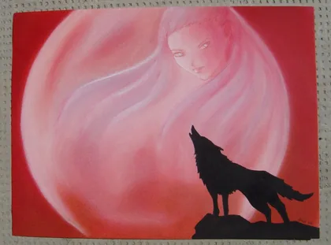
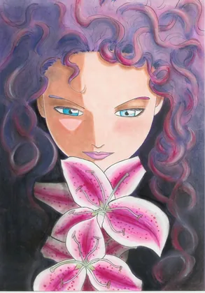
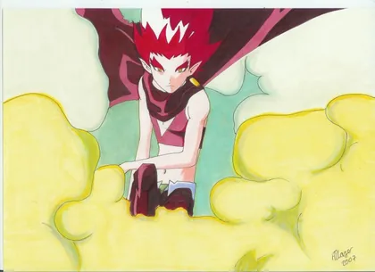
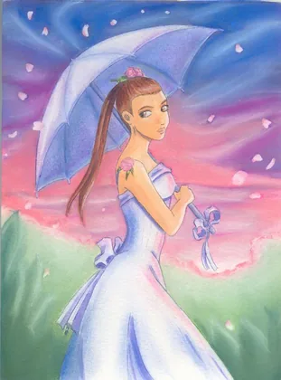
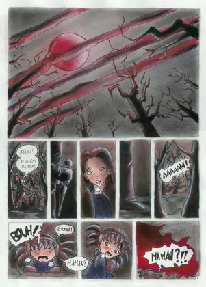
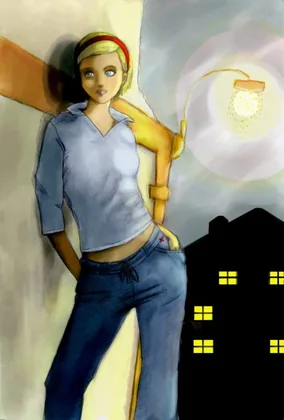
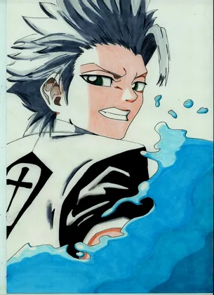
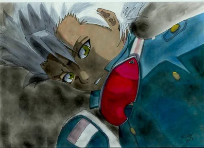

8 images · Touchez une image pour l’agrandir.
















Les créations de Namea · Anne
Parcourez les dessins au pastel sec, aux feutres et les illustrations numériques de Namea. Une galerie des autres travaux d’Anne.
8 images · Touchez une image pour l’agrandir.







